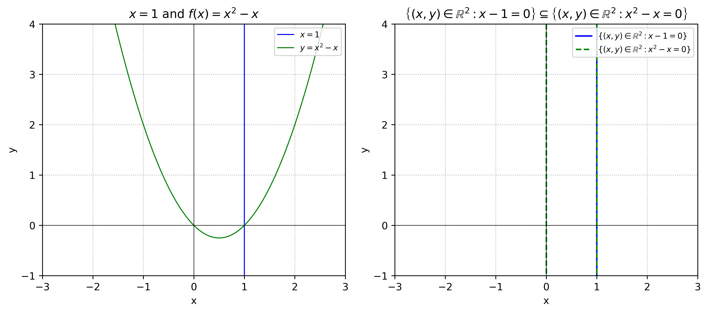
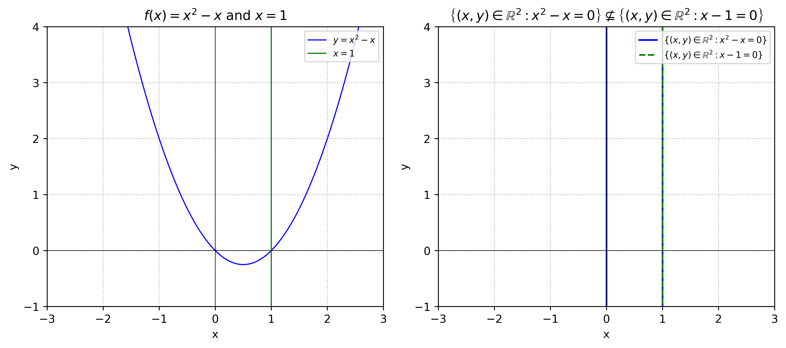

1.3 Subsets¶
It can happen that every element of a set \(A\) is an element of another set \(B\). For example, each element of \(A = \left\{ 0 , 2 , 4 \right\}\) is also an element of \(B = \left\{ 0 , 1 , 2 , 3 , 4 \right\}\). When \(A\) and \(B\) are related this way we say that \(A\) is a subset of \(B\).
Definition 1.3: Suppose \(A\) and \(B\) are sets. If every element of \(A\) is also an element of \(B\), then we say \(A\) is a subset of \(B\), and we denote this as \(A \subseteq B\). We write \(A \not \subseteq B\) if \(A\) is not a subset of \(B\), that is, if it is not true that every element of \(A\) is also an element of \(B\). Thus \(A \not \subseteq B\) means that there is at least one element of \(A\) that is not an element of \(B\).
Example 1.5: Be sure you understand why each of the following is true.
\(\{ 2 , 3 , 7 \} \subseteq \{ 2 , 3 , 4 , 5 , 6 , 7 \}\)
\(\{ 2 , 3 , 7 \} \not \subseteq \{ 2 , 4 , 5 , 6 , 7 \}\)
\(\{ 2 , 3 , 7 \} \subseteq \{ 2 , 3 , 7 \}\)
\(\left\{ ( x , \sin ( x ) ) : x \in \mathbb { R } \right\} \subseteq \mathbb { R } ^ { 2 }\)
\(\left\{ 1 , 3 , 5 , 7 , 1 1 , 1 3 , 1 7 , \ldots \right\} \subseteq \mathbb { N }\)
\(\mathbb{N} \subseteq \mathbb{Z} \subseteq \mathbb{Q} \subseteq \mathbb{R}\)
\(\mathbb{R} \times \mathbb{N} \subseteq \mathbb{R} \times \mathbb{R}\)
\(A \subseteq A\) for any set \(A\)
\(\varnothing \subseteq \varnothing\)
This brings us to a significant fact: If \(B\) is any set whatsoever, then \(\varnothing \subseteq B\). To see why this is true, look at the last sentence of Definition 1.3. It says that \(\varnothing \not \subseteq B\) would mean that there is at least one element of \(\varnothing\) that is not an element of \(B\). But this cannot be so because \(\varnothing\) contains no elements! Thus it is not the case that \(\varnothing \not \subseteq B\) , so it must be that \(\varnothing \subseteq B\).
Fact 1.2: The empty set is a subset of all sets, that is, \(\varnothing \subseteq B\) for any set \(B\).
Here is another way to look at it. Imagine a subset of \(B\) as a thing you make by starting with braces \(\{ \}\), then filling them with selections from \(B\). For example, to make one particular subset of \(B = \left\{ a , b , c \right\}\) , start with \(\{ \}\), select \(b\) and \(c\) from \(B\) and insert them into \(\{ \}\) to form the subset \(\{ b , c \}\). Alternatively, you could have chosen just \(a\) to make \(\{ a \}\), and so on. But one option is to simply select nothing from \(B\). This leaves you with the subset \(\{ \}\). Thus \(\{ \} \subseteq B\). More often we write it as \(\varnothing \subseteq B\).
This idea of “making” a subset can help us list out all the subsets of a given set \(B\). As an example, let \(B = \{ a , b , c \}\). Let’s list all of its subsets. One way of approaching this is to make a tree-like structure. Begin with the subset \(\{ \}\), which is shown on the left of Figure 1.3. Considering the element \(a\) of \(B\), we have a choice: insert it into \(\{ \}\), or not. The lines from \(\{ \}\) point to what we get depending whether or not we insert \(a\), either \(\{ \}\) or \(\{ a \}\). Now move on to the element \(b\) of \(B\). For each of the sets just formed we can either insert or not insert \(b\), and the lines on the diagram point to the resulting sets \(\{ \} , \{ b \} , \{ a \}\), or \(\{ a , b \}\). Finally, to each of these sets, we can either insert \(c\) or not insert it, and this gives us, on the far right-hand column, the sets \(\{ \} , \{ c \} , \{ b \} , \{ b , c \} , \{ a \} , \{ a , c \} , \{ a , b \}\) and \(\{ a , b , c \}\). These are the eight subsets of \(B = \{ a , b , c \}\).
 Figure 1.3. A “tree” for listing subsets
Figure 1.3. A “tree” for listing subsets
We can see from the way this tree branches that if it happened that \(B = \left\{ a \right\}\) , then \(B\) would have just two subsets, those in the second column of the diagram. If it happened that \(B = \left\{ a , b \right\}\) , then \(B\) would have four subsets, those in the third column, and so on. At each branching of the tree, the number of subsets doubles. So in general, if \(| B | = n\) , then \(B\) has \(2 ^ { n }\) subsets.
Fact 1.3: If a finite set has \(n\) elements, then it has \(2 ^ { n }\) subsets.
For a slightly more complex example, consider listing the subsets of \(B = \{ 1 , 2 , \{ 1 , 3 \} \}\). This \(B\) has just three elements: \(1\), \(2\) and \(\{1,3\}\). At this point you probably don’t even have to draw a tree to list out B’s subsets. You just make all the possible selections from \(B\) and put them between braces to get
These are the eight subsets of \(B\). Exercises like this help you identify what is and isn’t a subset. You know immediately that a set such as \(\{ 1 , 3 \}\) is not a subset of \(B\) because it can’t be made by inserting elements from \(B\) into \(\{ \}\), as the \(3\) is not an element of \(B\) and thus is not a valid selection. Notice that although \(\{ 1 , 3 \} \not \subseteq B\) , it is true that \(\{ 1 , 3 \} \in B\) . Also, \(\{ \{ 1 , 3 \} \} \subseteq B\) .
Example 1.6: Be sure you understand why the following statements are true. Each illustrates an aspect of set theory that you’ve learned so far.
\(1 \in \left\{ 1 , \left\{ 1 \right\} \right\}\) : \(1\) is the first element listed in \(\{ 1 , \{ 1 \} \}\)
\(1 \not \subseteq \left\{ 1 , \left\{ 1 \right\} \right\}\) : because \(1\) is not a set
\(\{ 1 \} \in \{ 1 , \{ 1 \} \}\) : \(\{ 1 \}\) is the second element listed in \(\{ 1 , \{ 1 \} \}\)
\(\{ 1 \} \subseteq \{ 1 , \{ 1 \} \}\) : make subset \(\{ 1 \}\) by selecting \(1\) from \(\{ 1 , \{ 1 \} \}\)
\(\{\{1\}\} \not \in \left\{ 1 , \left\{ 1 \right\} \right\}\) : because \(\{ 1 , \{ 1 \} \}\) contains only the elements \(1\) and \(\{ 1 \}\), and not \(\{ \{ 1 \} \}\)
\(\{ \{ 1 \} \} \subseteq \{ 1 , \{ 1 \} \}\) : make subset \(\{ \{ 1 \} \}\) by selecting \(\{ 1 \}\) from \(\{ 1 , \{ 1 \} \}\)
\(\mathbb{N} \not \in \mathbb{N}\) : \(\mathbb { N }\) is a set (not a number) and \(\mathbb { N }\) contains only numbers
\(\mathbb{N} \subseteq \mathbb{N}\) : because \(X \subseteq X\) for every set \(X\)
\(\varnothing \not \in \mathbb{N}\) : because the set \(\mathbb { N }\) contains only numbers and no sets
\(\varnothing \subseteq \mathbb{N}\) : because \(\varnothing\) is a subset of every set
\(\mathbb{N} \in \{\mathbb{N}\}\) : because \(\{ \mathbb { N } \}\) has just one element, the set \(\mathbb { N }\)
\(\mathbb { N } \not \subseteq \{ \mathbb { N } \}\) : because, for instance, \(1 \in \mathbb { N }\) but \(1 \notin \{ \mathbb { N } \}\)
\(\varnothing \not \in \{\mathbb{N}\}\) : note that the only element of \(\{ \mathbb { N } \}\) is \(\mathbb { N }\), and \(\mathbb { N } \neq \varnothing\)
\(\varnothing \subseteq \{ \mathbb { N } \}\) : because \(\varnothing\) is a subset of every set
\(\varnothing \in \{ \varnothing, \mathbb { N } \}\) : \(\varnothing\) is the first element listed in \(\{ \varnothing , \mathbb { N } \}\)
\(\varnothing \subseteq \{ \varnothing, \mathbb { N } \}\) : because \(\varnothing\) is a subset of every set
\(\mathbb{N} \subseteq \{ \varnothing, \mathbb { N } \}\) : make subset \(\{ \mathbb { N } \}\) by selecting \(\mathbb { N }\) from \(\{ \varnothing , \mathbb { N } \}\)
\(\{\mathbb{N}\} \not \subseteq \{ \varnothing, \{\mathbb { N }\} \}\) : because \(\mathbb { N } \notin \{ \varnothing , \{ \mathbb { N } \} \}\)
\(\{\mathbb{N}\} \in \{ \varnothing, \{\mathbb { N }\} \}\) : \(\{\mathbb{N}\}\) is the second element listed in \(\{ \varnothing , \{ \mathbb { N } \} \}\)
\(\left\{ ( 1 , 2 ) , ( 2 , 2 ) , ( 7 , 1 ) \right\} \subseteq \mathbb { N } \times \mathbb { N }\) : each of \((1, 2)\), \((2, 2)\), \((7, 1)\) is in \(\mathbb { N } \times \mathbb { N }\)
Though they should help you understand the concept of subset, the above examples are somewhat artificial. But in general, subsets arise very naturally. For instance, consider the unit circle \(C = \left\{ ( x , y ) \in \mathbb { R } ^ { 2 } : x ^ { 2 } + y ^ { 2 } = 1 \right\}\). This is a subset \(C \subseteq \mathbb { R } ^ { 2 }\) . Likewise the graph of a function \(y = f ( x )\) is a set of points \(G = \left\{ ( x , f ( x ) ) : x \in \mathbb { R } \right\}\), and \(G \subseteq \mathbb { R } ^ { 2 }\). Surely sets such as \(C\) and \(G\) are more easily understood or visualized when regarded as subsets of \(\mathbb { R } ^ { 2 }\). Mathematics is filled with such instances where it is important to regard one set as a subset of another.
Exercises for Section 1.3¶
A. List all the subsets of the following sets.
\(\{1,2,3,4\}\)
Answer
\(\mathscr{P}(\{1,2,3,4\}) = \{ \varnothing, \{1\}, \{2\}, \{3\}, \{4\}, \{1,2\}, \{1,3\}, \{1,4\}, \{2,3\}, \{2,4\}, \{3,4\}, \{1,2,3\}, \{1,2,4\}, \{1,3,4\}, \{2,3,4\}, \{1,2,3,4\} \}\)
\(\{1,2,\varnothing\}\)
Answer
\(\mathscr{P}(\{1,2,\varnothing\}) = \{ \varnothing, \{1\}, \{2\}, \{\varnothing\}, \{1,2\}, \{1,\varnothing\}, \{2,\varnothing\}, \{1,2,\varnothing\} \}\)
\(\{\{\mathbb{R}\}\}\)
Answer
\(\mathscr{P}(\{\{\mathbb{R}\}\}) = \{ \varnothing, \{\{\mathbb{R}\}\} \}\)
\(\varnothing\)
Answer
\(\mathscr{P}(\varnothing) = \{ \varnothing \}\)
\(\{\varnothing\}\)
Answer
\(\mathscr{P}(\{ \varnothing \}) = \{ \varnothing, \{ \varnothing \} \}\)
\(\{\mathbb{R}, \mathbb{Q}, \mathbb{N}\}\)
Answer
\(\mathscr{P}(\{ \mathbb{R}, \mathbb{Q}, \mathbb{N} \}) = \{ \varnothing, \{\mathbb{R}\}, \{\mathbb{Q}\}, \{\mathbb{N}\}, \{\mathbb{R},\mathbb{Q}\}, \{\mathbb{R},\mathbb{N}\}, \{\mathbb{Q},\mathbb{N}\}, \{\mathbb{R},\mathbb{Q},\mathbb{N}\} \}\)
\(\{\mathbb{R}, \{ \mathbb{Q}, \mathbb{N}\}\}\)
Answer
\(\mathscr{P}(\{ \mathbb{R}, \{ \mathbb{Q}, \mathbb{N} \} \}) = \{ \varnothing, \{\mathbb{R}\}, \{\{\mathbb{Q},\mathbb{N}\}\}, \{\mathbb{R},\{\mathbb{Q},\mathbb{N}\}\} \}\)
\(\{\{0,1\},\{0,1,\{2\}\}, \{0\}\}\)
Answer
With elements \(A=\{0,1\}\), \(B=\{0,1,\{2\}\}\), \(C=\{0\}\), the subsets are: \(\{ \varnothing, \{A\}, \{B\}, \{C\}, \{A,B\}, \{A,C\}, \{B,C\}, \{A,B,C\} \}\), i.e., \(\{ \varnothing, \{\{0,1\}\}, \{\{0,1,\{2\}\}\}, \{\{0\}\}, \{\{0,1\},\{0,1,\{2\}\}\}, \{\{0,1\},\{0\}\}, \{\{0,1,\{2\}\},\{0\}\}, \{\{0,1\},\{0,1,\{2\}\},\{0\}\} \}\)
B. Write out the following sets by listing their elements between braces. 9. \(\{ X : X \subseteq \{ 3 , 2 , a \} \text{ and } | X | = 2 \}\)
Answer
\(\{\{3,2\},\{3,a\},\{2,a\}\}\)
\(\{ X \subseteq \mathbb { N } : | X | \leq 1 \}\)
Answer
\(\{ \varnothing, \{1\}, \{2\}, \{3\}, \ldots \}\) (assuming \(\mathbb{N}\) does not include \(0\))
\(\{ X : X \subseteq \{ 3 , 2 , a \} \text{ and } | X | = 4 \}\)
Answer
\(\varnothing = \{\}\) (there are no \(4\)-element subsets of a \(3\)-element set)
\(\{ X : X \subseteq \{ 3 , 2 , a \} \text{ and } | X | = 1 \}\)
Answer
\(\{ \{3\}, \{2\}, \{a\} \}\)
C. Decide if the following statements are true or false. Explain. 13. \(\mathbb { R } ^ { 3 } \subseteq \mathbb { R } ^ { 3 }\)
Answer
True. Every element of \(\mathbb{R}^3\) is (trivially) an element of \(\mathbb{R}^3\): a complete set is always a subset of itself.
\(\mathbb { R } ^ { 2 } \subseteq \mathbb { R } ^ { 3 }\)
Answer
False. As sets, \(\mathbb{R}^2 = \{(x,y):x,y \in \mathbb{R} \}\) and \(\mathbb{R}^3 = \{(x,y,z):x,y,z \in \mathbb{R} \}\) have elements of different lengths; no \((x,y)\) equals any \((x,y,z)\), so \(\mathbb{R}^2 \nsubseteq \mathbb{R}^3\).
\(\left\{ ( x , y ) \in \mathbb { R } ^ { 2 } : x - 1 = 0 \right\} \subseteq \left\{ ( x , y ) \in \mathbb { R } ^ { 2 } : x ^ { 2 } - x = 0 \right\}\)
Answer
True. The left-hand set is the vertical line \(x=1\). Thus \(\{ ( x , y ) \in \mathbb { R } ^ { 2 } : x - 1 = 0 \} = \{\ldots,(1,-1),\ldots, (1, -0.5),\ldots, (1,0),\ldots, (1,0.5),\ldots,(1,1),\ldots\}\). Every tuple \((x,y)\) in \(\mathbb{R}^2\) with \(x = 1\). The right-hand set consists of two vertical lines in \(\mathbb{R}^2\): \(\{ (x,y) : x(x-1)=0 \}\), i.e. \(x=0\) or \(x=1\). Thus \(\{ ( x , y ) \in \mathbb { R } ^ { 2 } : x ^ { 2 } - x = 0 \} = \{\ldots,(0,-1),\ldots, (0, -0.5),\ldots, (0,0),\ldots, (0,0.5),\ldots,(0,1),\ldots,(1,-1),\ldots, (1, -0.5),\ldots, (1,0),\ldots, (1,0.5),\ldots,(1,1),\ldots\}\). Every tuple \((x,y)\) in \(\mathbb{R}^2\) with \(x = 0\) or \(x = 1\). Every point with \(x=1\) lies in the right set.
{kind=link}

#!/usr/bin/env -S uv run
# /// script
# dependencies = [
# "numpy",
# "matplotlib",
# "uuid",
# ]
# ///
import matplotlib
matplotlib.use("Agg") # non-interactive backend
import uuid
import numpy as np
import matplotlib.pyplot as plt
x = np.linspace(-4, 4, 800)
y = np.linspace(-4, 4, 800)
y1 = np.full_like(y, 1) # x = 1, plotted as (x,y) = (1,y)
y2 = x**2 - x # y = x^2 - x
fig, axes = plt.subplots(1, 2, figsize=(10, 6))
# Subplot 1: x = 1 and f(x) = x^2 - x
ax = axes[0]
ax.plot(y1, y, linewidth=1, color="blue", label=r"$x = 1$")
ax.plot(x, y2, linewidth=1, color="green", label=r"$y = x^2 - x$")
ax.axhline(0, color="black", linewidth=0.5)
ax.axvline(0, color="black", linewidth=0.5)
ax.set_aspect("equal", "box")
ax.set_xlim(-3, 3)
ax.set_ylim(-1, 4)
ax.set_title(r"$x=1$ and $f(x) = x^2-x$")
ax.set_xlabel("x")
ax.set_ylabel("y")
ax.grid(True, linestyle=":")
ax.legend(loc="upper right", fontsize=8)
# Subplot 2: sets x - 1 = 0 and x^2 - x = 0 in R^2
ax = axes[1]
# Set 1: x - 1 = 0 -> vertical line x = 1
ax.plot(np.full_like(y, 1), y, linewidth=1.5, color="blue",
label=r"$\{(x,y)\in\mathbb{R}^2:x-1=0\}$")
# Set 2: x^2 - x = 0 -> x(x-1)=0 -> two vertical lines x=0 or x=1
ax.plot(np.full_like(y, 0), y, linewidth=1.5, color="green", linestyle="--",
label=r"$\{(x,y)\in\mathbb{R}^2:x^2-x=0\}$")
ax.plot(np.full_like(y, 1), y, linewidth=1.5, color="green", linestyle="--")
ax.axhline(0, color="black", linewidth=0.5)
ax.axvline(0, color="black", linewidth=0.5)
ax.set_aspect("equal", "box")
ax.set_xlim(-3, 3)
ax.set_ylim(-1, 4)
ax.set_title(
r"$\left\{(x,y)\in\mathbb{R}^2:x-1=0\right\}\subseteq"
r"\left\{(x,y)\in\mathbb{R}^2:x^2-x=0\right\}$"
)
ax.set_xlabel("x")
ax.set_ylabel("y")
ax.grid(True, linestyle=":")
ax.legend(loc="upper right", fontsize=8)
plt.tight_layout()
# Generate UUID filename
uid = uuid.uuid4().hex
# Save high-resolution outputs
plt.savefig(f"{uid}.png", dpi=600, bbox_inches="tight")
plt.savefig(f"{uid}.svg", bbox_inches="tight")
plt.close()
chmod +x plot.py
uv run plot.py
\(\left\{ ( x , y ) \in \mathbb { R } ^ { 2 } : x ^ { 2 } - x = 0 \right\} \subseteq \left\{ ( x , y ) \in \mathbb { R } ^ { 2 } : x - 1 = 0 \right\}\)
Answer
False. The left-hand set consists of two vertical lines in \(\mathbb{R}^2\): \(\{ (x,y) : x(x-1)=0 \}\), i.e. \(x=0\) or \(x=1\). Thus \(\{ ( x , y ) \in \mathbb { R } ^ { 2 } : x ^ { 2 } - x = 0 \} = \{\ldots,(0,-1),\ldots, (0, -0.5),\ldots, (0,0),\ldots, (0,0.5),\ldots,(0,1),\ldots,(1,-1),\ldots, (1, -0.5),\ldots, (1,0),\ldots, (1,0.5),\ldots,(1,1),\ldots\}\). Every tuple \((x,y)\) in \(\mathbb{R}^2\) with \(x = 0\) or \(x = 1\). The right-hand set is the vertical line \(x=1\). Thus \(\{ ( x , y ) \in \mathbb { R } ^ { 2 } : x - 1 = 0 \} = \{\ldots,(1,-1),\ldots, (1, -0.5),\ldots, (1,0),\ldots, (1,0.5),\ldots,(1,1),\ldots\}\). Every tuple \((x,y)\) in \(\mathbb{R}^2\) with \(x = 1\). Points with \(x=0\) (e.g. \((0,0)\)) are not in the right-hand set representing \(x=1\).
{kind=link}

#!/usr/bin/env -S uv run
# /// script
# dependencies = [
# "numpy",
# "matplotlib",
# "uuid",
# ]
# ///
import matplotlib
matplotlib.use("Agg") # non-interactive backend
import uuid
import numpy as np
import matplotlib.pyplot as plt
x = np.linspace(-4, 4, 800)
y = np.linspace(-4, 4, 800)
y1 = np.full_like(y, 1) # x = 1, plotted as (x,y) = (1,y)
y2 = x**2 - x # y = x^2 - x
fig, axes = plt.subplots(1, 2, figsize=(10, 6))
# Subplot 1: x = 1 and f(x) = x^2 - x
ax = axes[0]
ax.plot(y1, y, linewidth=1, color="blue", label=r"$x = 1$")
ax.plot(x, y2, linewidth=1, color="green", label=r"$y = x^2 - x$")
ax.axhline(0, color="black", linewidth=0.5)
ax.axvline(0, color="black", linewidth=0.5)
ax.set_aspect("equal", "box")
ax.set_xlim(-3, 3)
ax.set_ylim(-1, 4)
ax.set_title(r"$x=1$ and $f(x) = x^2-x$")
ax.set_xlabel("x")
ax.set_ylabel("y")
ax.grid(True, linestyle=":")
ax.legend(loc="upper right", fontsize=8)
# Subplot 2: sets x - 1 = 0 and x^2 - x = 0 in R^2
ax = axes[1]
# Set 1: x - 1 = 0 -> vertical line x = 1
ax.plot(np.full_like(y, 1), y, linewidth=1.5, color="blue",
label=r"$\{(x,y)\in\mathbb{R}^2:x-1=0\}$")
# Set 2: x^2 - x = 0 -> x(x-1)=0 -> two vertical lines x=0 or x=1
ax.plot(np.full_like(y, 0), y, linewidth=1.5, color="green", linestyle="--",
label=r"$\{(x,y)\in\mathbb{R}^2:x^2-x=0\}$")
ax.plot(np.full_like(y, 1), y, linewidth=1.5, color="green", linestyle="--")
ax.axhline(0, color="black", linewidth=0.5)
ax.axvline(0, color="black", linewidth=0.5)
ax.set_aspect("equal", "box")
ax.set_xlim(-3, 3)
ax.set_ylim(-1, 4)
ax.set_title(
r"$\left\{(x,y)\in\mathbb{R}^2:x-1=0\right\}\subseteq"
r"\left\{(x,y)\in\mathbb{R}^2:x^2-x=0\right\}$"
)
ax.set_xlabel("x")
ax.set_ylabel("y")
ax.grid(True, linestyle=":")
ax.legend(loc="upper right", fontsize=8)
plt.tight_layout()
# Generate UUID filename
uid = uuid.uuid4().hex
# Save high-resolution outputs
plt.savefig(f"{uid}.png", dpi=600, bbox_inches="tight")
plt.savefig(f"{uid}.svg", bbox_inches="tight")
plt.close()
chmod +x plot.py
uv run plot.py